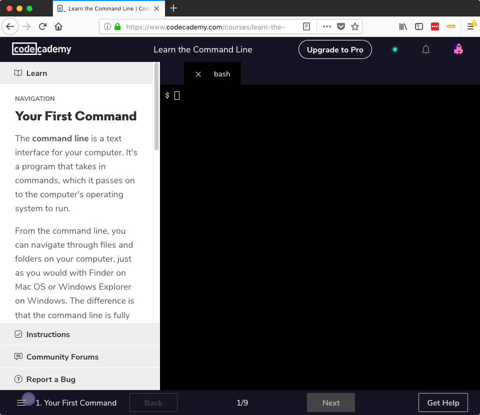
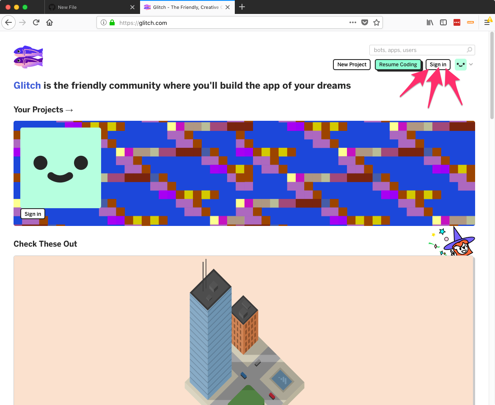
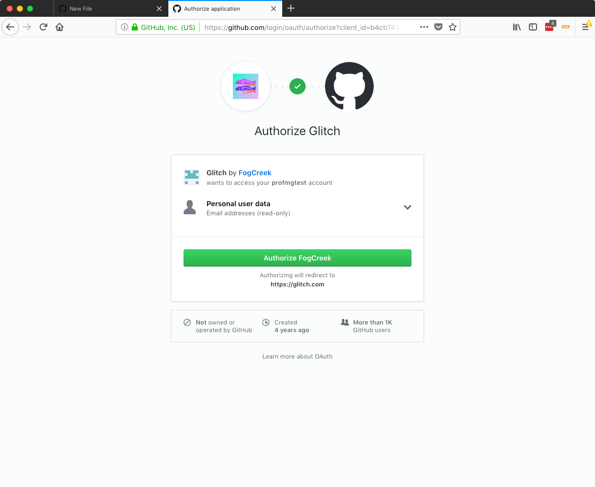
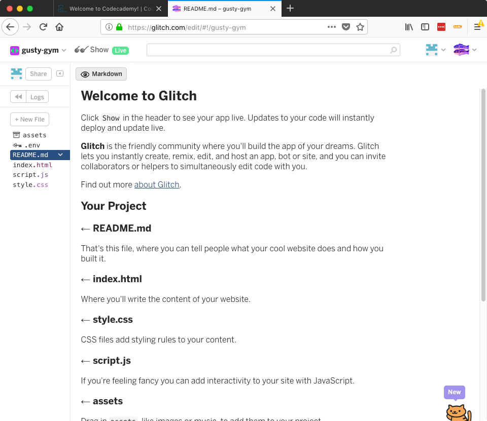

Command Line Interface Languages
Watch the Harvard CS50 command line overview
- Login and click the orange
STARTbutton on Codecademy's Learn the Command Line course. Complete the first 2 modules in this course:
- Navigating the File System
- Viewing and Changing the File System
Navigating the File System has 9 lessons which can be found by clicking the menu icon in the lower left hand corner of the codecademy screen. 
In the Navigation module, you'll learn about the following commands:
pwdoutputs the name of the current working directory.lslists all files and directories in the working directory.cdswitches you into the directory you specify.mkdircreates a new directory in the working directory.touchcreates a new file inside the working directory.
After completing these 9 lessons click Next to move to the next module. Remember, you do not have to upgrade to codecademy pro.
In the Manipulation module, you'll learn about:
- options that modify what
lsandcpdo - how wildcards allow you to select groups of files or directories
Introducing a new tool - Glitch
Codecademy is great for learning and practicing new concepts, but it is purposefully limiting in what you can do. When we need more flexibility you'll use a site called Glitch to apply the knowledge you've been learning.
This is especially useful when learning the command line as typing the wrong command on your personal computer can do serious damage.
Head to https://glitch.com and click the
Sign inbutton in the upper right.
Choose the
Sign in with Githuboption and you'll be taken to the screen below. Click the greenAuthorize FogCreekbutton (FogCreek is the company who makes Glitch). You'll be redirected to the glitch homepage with an account ready for coding!
Click
New Projectthenhello-webpagein the upper right corner and you'll be taken to the Glitch coding environment.
Notice, my project is called gutsy-gym. Yours will be called something different, this allows many people to create projects on glitch and share them with each other.
Click the
Logsbutton near the upper left to open the console at the bottom of your browser.There, you will see a
Consolebutton. Click this and a new window or tab will open with a command line for your project
Practice the commands you learned. If you get stuck, head back to glitch.com and create a new project to start over.
Extra Resources
Because Windows is not based on Unix, there are several differences in how the Windows Command Prompt works compared to what you learned above. thenewboston has a good Youtube playlist that does over the Windows Command Prompt if you're a Windows user.
djangogirls.com has a good resource that takes the topics and shows them for Mac, Linux, and Windows side-by-side.